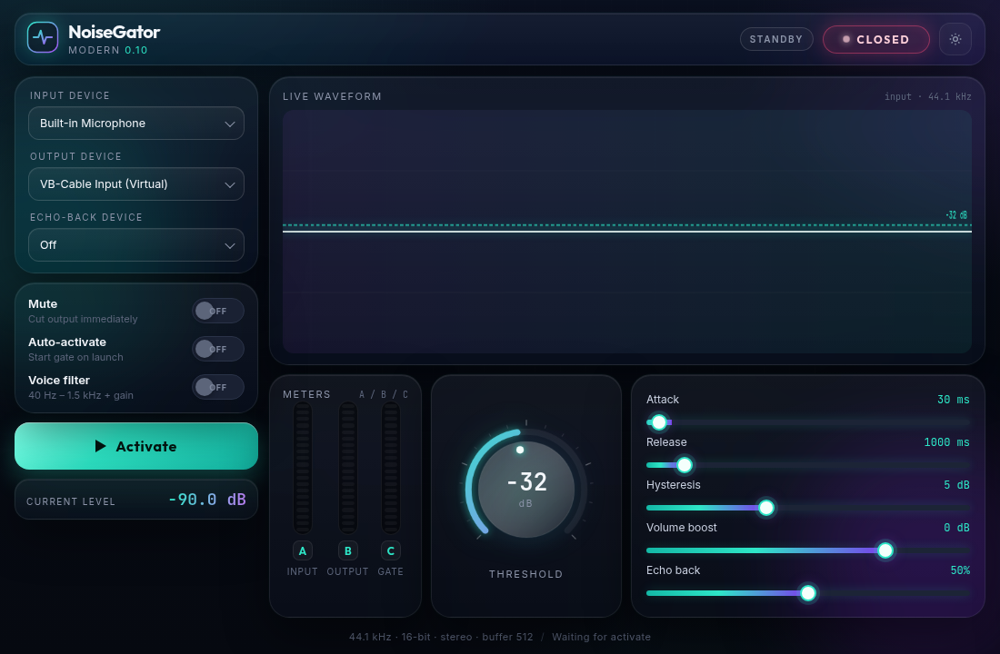

Keyboard clacks
Mechanical keys sit next to the mic. A gate closes on the quiet gaps so Discord, Zoom, and Teams do not hear every tap.
Windows mic noise gate · unlimited trial
Cut keyboard clicks and room noise on Discord, Zoom, and Teams. Hear yourself locally. Send a clean mic. Unlimited trial — $15 one-time to drop the nag.
Works with

The problem
NoiseGator is a local microphone noise gate, not NVIDIA Broadcast or Krisp. It does not create a virtual mic.
Mechanical keys sit next to the mic. A gate closes on the quiet gaps so Discord, Zoom, and Teams do not hear every tap.
Room tone sits under your voice. Set the dB threshold so the mic stays shut until you speak.
If you cannot hear yourself, you lean into the mic. Echo-back lets you monitor locally, at your own volume.
Some tools upload your voice to clean it. This gate runs on your Windows PC. Audio stays there.
Controls
Set the microphone noise gate from −60 to 0 dB. A dashed line on the waveform marks the same level. The gate opens when the attack-window average stays at or above it.
The gate closes only after the level drops below threshold minus hysteresis, so keyboard clicks near the line do not chatter the mic.
How long the mic level must stay above or below the noise gate threshold before it opens or closes.
Hear yourself locally on headphones or speakers, with its own volume, separate from the clean mic you send to Discord, Zoom, or Teams.
40 Hz high-pass, 1.5 kHz low-pass, plus slow adaptive gain for speech. Helps keep room rumble out of the gate.
Pick input, output, and an echo-back device, or Off. NoiseGator does not create a virtual microphone. Pair it with VB-Cable for Discord, Zoom, or Teams.
Four steps
Needs VB-Cable or similar. NoiseGator does not create a virtual microphone.
Input → your real microphone.
Output → VB-Cable Input.
Headphones or speakers, or Off.
In Discord / Zoom / Teams, set the mic to the cable.
Pricing
The exe works forever. A license is for removing the nag — email for next steps. No instant checkout yet.
Trial
$0USD · forever
License
$15USD · one-time
Opens your mail app. You’ll get a reply with how to pay — no instant checkout yet.
FAQ
A microphone noise gate mutes the mic when the level stays below a threshold. NoiseGator opens when your voice is loud enough and closes on quiet keyboard clicks and room noise.
Yes. Route the gated output through a virtual cable (VB-Cable or similar), then pick that cable as the microphone in Discord, Zoom, or Teams.
Yes, or another virtual cable. NoiseGator does not create a virtual microphone. You send the gated output to a cable, then the call app uses that cable as its mic.
The Windows exe is an unlimited trial — it works forever and may nag. A $15 one-time license is for removing the nag. The app does not redeem license keys yet; email to order and you’ll get next steps.
Email berkkarabacak@gmail.com with the subject NoiseGator license. It’s $15 one-time. You’ll get a reply with next steps — there is no instant checkout yet.
No. Audio stays on your PC. This site has no accounts and no tracking cookies of its own. GitHub Pages and GitHub may log visits and downloads.
No. Pair it with VB-Cable or similar, then set that cable as the mic in your call app.
Get it
Download the Windows exe and use it forever. Buy a license when you want the nag gone — email for next steps.